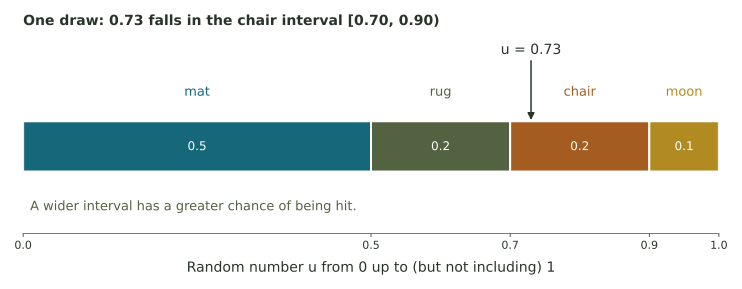
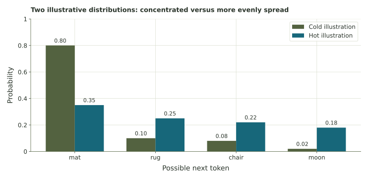
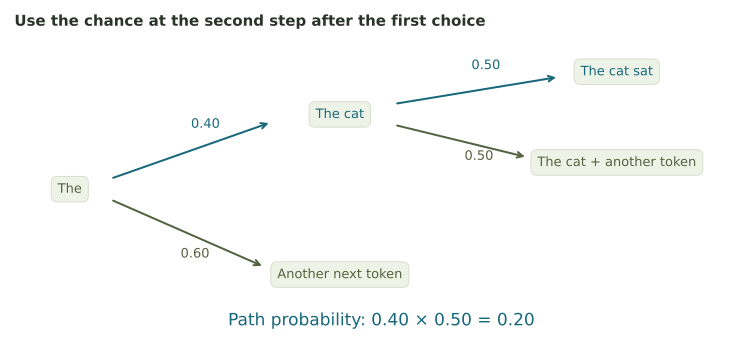

Probability, sampling, and short paths
Work with a next-token distribution, locate a random draw, and calculate the chance of a short generated path.
One step of text generation
Suppose the unfinished text is The cat sat on the … A toy model assigns the probabilities below. For these exercises, treat each listed word as one token.
| Next token | mat | rug | chair | moon |
|---|---|---|---|---|
| Probability | .50 | .20 | .20 | .10 |
These probabilities add to 1. We'll use them to calculate complements, expected counts, and random selections.
1. A token and its complement
Use mat 0.50, rug 0.20, chair 0.20, and moon 0.10. “Not mat” includes all three other tokens.
2. Expected counts across repeated trials
Return to exactly this distribution 200 times. Expected count means number of trials × probability. An individual set of 200 draws may give a different count.
3. Locate a random draw in an interval
Use mat = [0,0.50), rug = [0.50,0.70), chair = [0.70,0.90), moon = [0.90,1). Each interval includes its left endpoint and excludes its right endpoint.

4. Comparing two distributions
Temperature is one setting that changes how strongly a model favors its higher-scored choices when sampling. A lower positive temperature makes the distribution more concentrated; a higher one spreads probability more evenly. Compare the two example distributions below.
| Illustration | mat | rug | chair | moon |
|---|---|---|---|---|
| Cold | .80 | .10 | .08 | .02 |
| Hot | .35 | .25 | .22 | .18 |

5. Follow a two-step path
After “The,” suppose the chance of “cat” is 0.40. After “The cat,” suppose the chance of “sat” is 0.50. To generate the path “cat sat,” both steps must occur, in that order.

In symbols, \(P(\text{cat}\mid\text{The})=0.40\) means “the probability of cat given the text The.” The vertical bar means “given.” Then \(P(\text{sat}\mid\text{The cat})=0.50\) uses the updated text. The path probability is 0.40 × 0.50.
Following a generated sequence
At each step, the model assigns probabilities and selects a token. That token becomes part of the text used at the next step.
Further reading: Hugging Face on generation strategies.